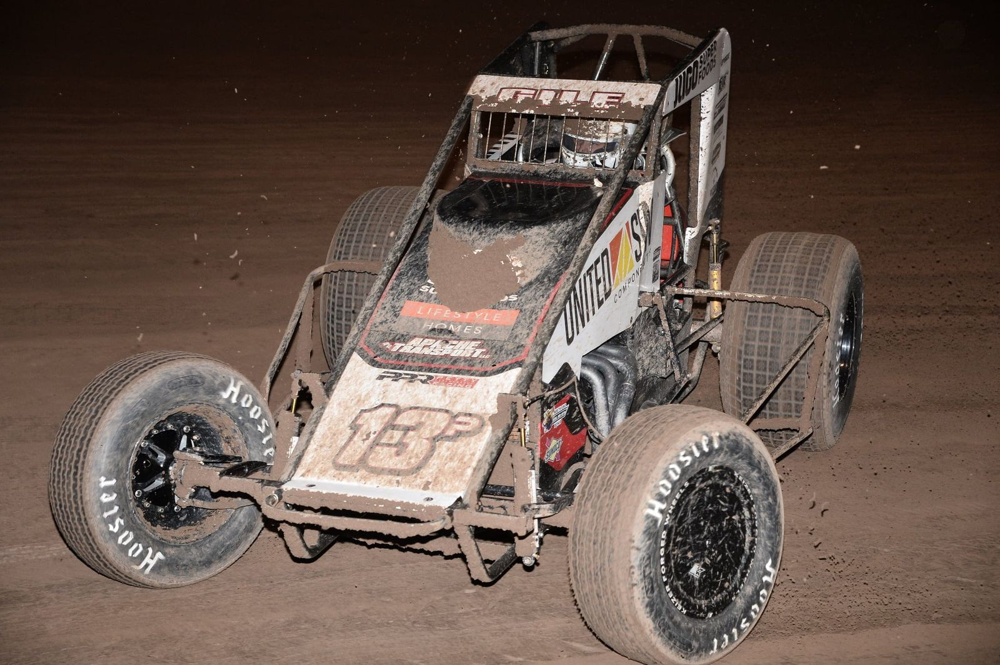

Elijah Gile Wins USAC Southwest Sprint Car Feature at Central Arizona Raceway
Gile started ninth in the Petty Performance Racing No. 13p and passed polesitter J.J. Yeley with two laps to go on opening night of the Dennis Matousek Memorial at Casa Grande, Ariz., on Friday, Nov. 20.

Elijah Gile won the 25-lap USAC Avanti Windows & Doors Southwest Sprint Car feature at Central Arizona Raceway in Casa Grande, Arizona, on Friday, Nov. 20, the opening night of the Dennis Matousek Memorial Race, according to USAC. It was the Phoenix driver’s second career series win, after his first in August at Deuce of Clubs Thunder Raceway in Show Low, Arizona. USAC said Matousek, an Arizona Racing Association sprint car champion and Arizona Motorsports Hall of Fame inductee who died in January 2025, was Gile’s great-grandfather, and that Gile also won the inaugural edition of the race in 2025.
Gile started ninth in the Petty Performance Racing No. 13p. Yeley started on the pole and led laps 1 through 23 before Gile took the lead and led the final two laps, according to the official lap leaders. Yeley finished second, 1.232 seconds behind. A.J. Hernandez was third, Koen Crawford fourth and Chaz Baca fifth. R.J. Johnson, Dayton Shelton, Charles Davis Jr., Cameron La Rose and Connor Lundy completed the top 10 in the 21-car feature.
Johnson set fast time at 16.063 seconds among 23 qualifiers, USAC said. Baca, Shelton and Gile won the three eight-lap heat races. In the 360 winged sprint car feature on the same program, D.J. Netto of Hanford, California, was the winner, according to Central Arizona Raceway’s event results.
The Dennis Matousek Memorial concludes Saturday, Nov. 21, at Central Arizona Raceway, according to USAC.